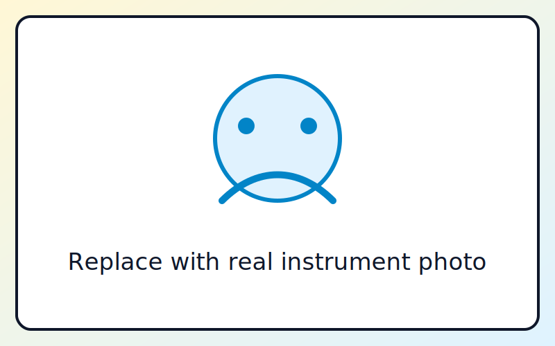

Super Sound Safari
Choose one instrument family, then complete that challenge.
1 of 20

Listening...
Choose the correct instrument to continue:
Great Work!
You scored 0 points.
Scoring: 2 points first try, 1 point second try, 0 points after multiple choice.